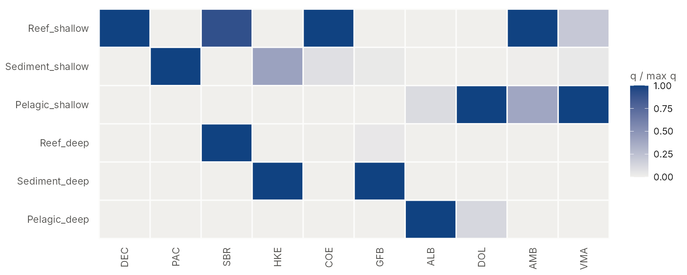
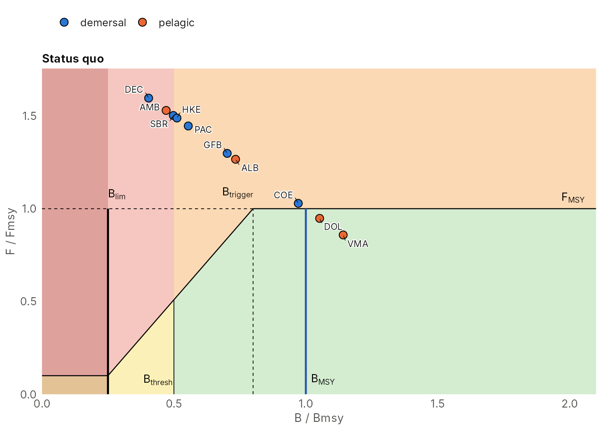
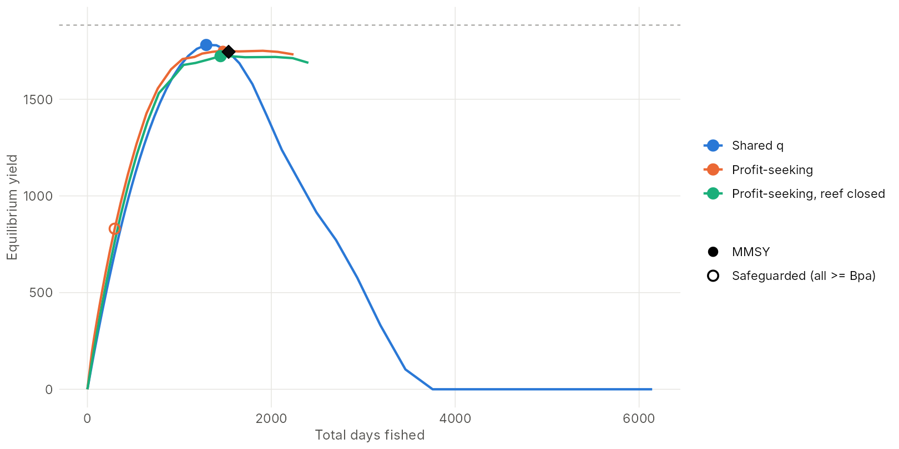
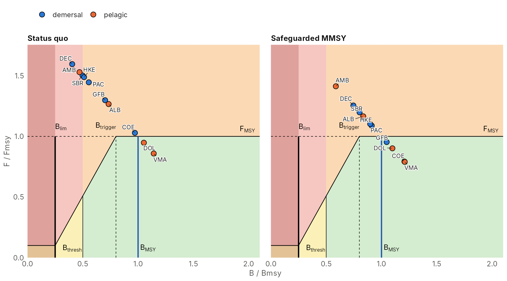
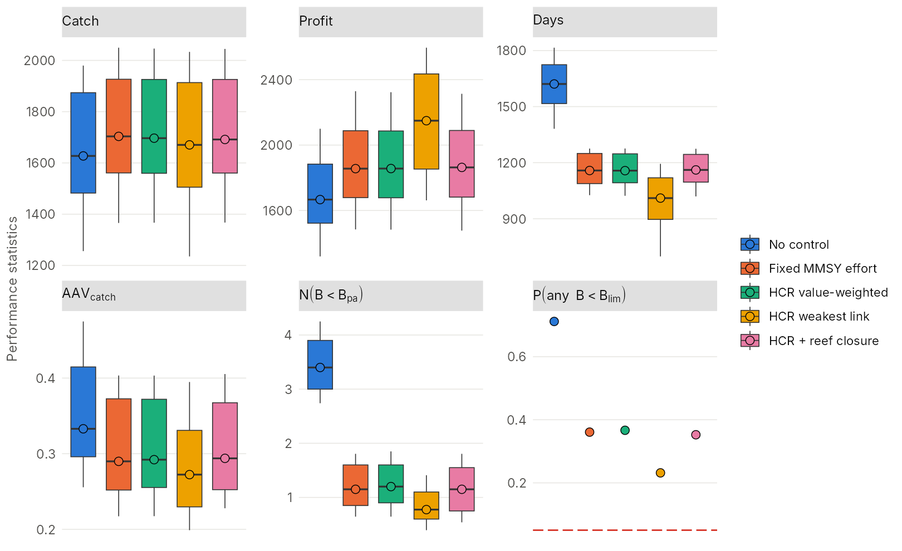
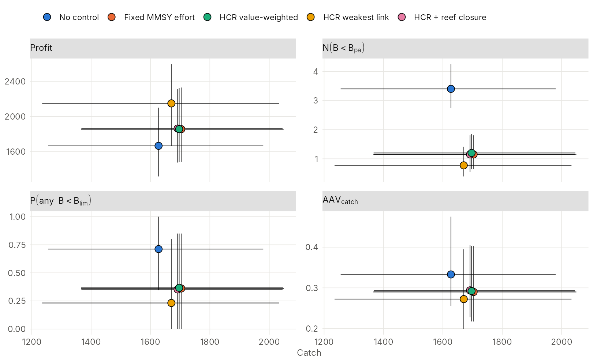
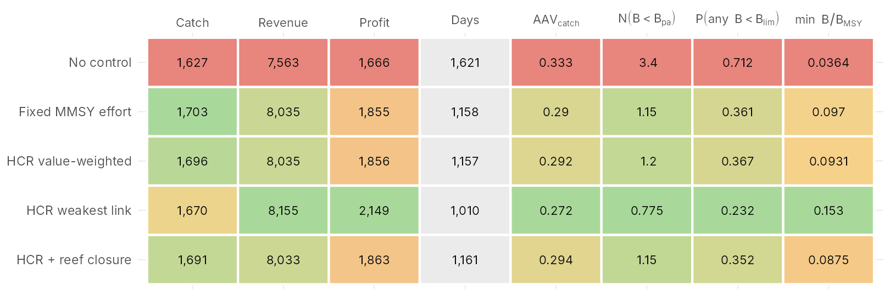
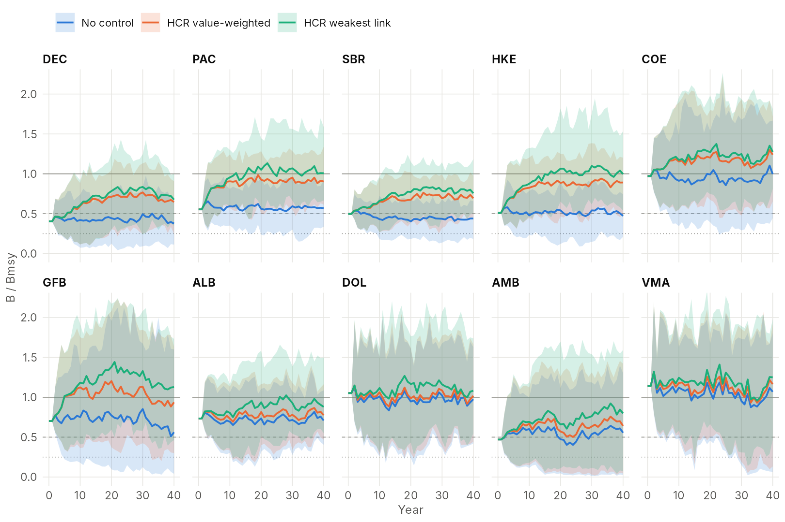

This vignette walks through a complete analysis with the package
functions, from loading a system to comparing harvest strategies with
performance statistics and plots. It uses the Atlantic example, which
runs quickly; the same calls work for the Gulf of Thailand draft
(got_system_draft()) or for your own tables. How the two
example systems were built is described in
vignette("scenario-setup"), the model in
vignette("how-it-works") and the management options in
vignette("management-options").
| Step | Functions |
|---|---|
| 1. Load and inspect a system |
atlantic_system(), got_system_draft(),
read_ms_system(), plot_catchability()
|
| 2. Status quo |
ms_status_quo(), plot_kobe()
|
| 3. Equilibrium scenarios |
ms_simulate(), ms_summary(),
ms_closure()
|
| 4. Yield curves |
ms_yield_curve(), ms_shared_q_curve(),
plot_yield_curves()
|
| 5. Safeguarded MMSY | ms_optimise() |
| 6. Harvest strategies |
hcr_effort(), ms_simulate()
|
| 7. Performance statistics |
ms_perf(), ms_perf_table(),
plot_bps(), plot_tradeoffs(),
plot_quilt()
|
| 8. Projections |
plot_projection(), plot_fleet()
|
| 9. Tuning triggers | ms_tune_hcr() |
| 10. The app | run_app() |
1. Load and inspect a system
A system holds the stocks, metiers (a fishing tactic on a ground), their catchability, and the fleet segments.
sys <- atlantic_system()
sys
#> <ms_system> 10 stocks, 6 metiers, 3 segments
#> stocks: DEC, PAC, SBR, HKE, COE, GFB, ALB, DOL, AMB, VMA
#> metiers: Reef_shallow, Sediment_shallow, Pelagic_shallow, Reef_deep, Sediment_deep, Pelagic_deep
#> segment demersal loyalty 0.80, efficiency 1.00, daily cost x0.634, home: Reef_shallow, Sediment_shallow, Reef_deep, Sediment_deep
#> segment pelagic loyalty 0.80, efficiency 1.00, daily cost x1.077, home: Pelagic_shallow, Pelagic_deep
#> segment mixed loyalty 0.00, efficiency 0.75, daily cost x0.843, home: Reef_shallow, Sediment_shallow, Pelagic_shallow, Reef_deep, Sediment_deep, Pelagic_deepThe catchability matrix decides who catches what: each column is scaled to the stock’s highest catchability.
plot_catchability(sys)
Your own system is read from four CSV tables with
read_ms_system(folder, prefix) (see
?ms_system).
2. The status quo
The status quo is the open-access equilibrium: each segment fishes
the days of its vessels that break even, up to its capacity.
gamma is the strength of the profit preference (how
strongly fishers chase the most profitable metiers).
sq <- ms_status_quo(sys, capacity = 1000, gamma = 1.5, years = 300)
round(sq$E_seg) # days by segment
#> demersal pelagic mixed
#> 549 528 459
round(sq$BBmsy, 2) # stock status
#> Dentex dentex Pagellus erythrinus Pagellus bogaraveo
#> 0.40 0.55 0.50
#> Merluccius merluccius Conger conger Phycis blennoides
#> 0.51 0.97 0.70
#> Thunnus alalunga Coryphaena hippurus Seriola dumerili
#> 0.73 1.05 0.47
#> Scomber colias
#> 1.14
sq$summary[, c("yield", "revenue", "profit")]
#> yield revenue profit
#> 1 1745.361 7769.257 1489.249The Kobe plot shows the stocks on the harvest-rule zones (Blim 0.25, Bpa 0.5, trigger 0.8 Bmsy, minimum F 0.1). In equilibrium every stock lies on the line B/Bmsy + F/Fmsy = 2.

3. Equilibrium scenarios
ms_simulate() runs any number of scenarios (rows of
caps, days by segment) in one call;
ms_summary() gives the equilibrium yield, profit and
status. Here: the status quo, the demersal fleet halved, and the shallow
reef closed from January to June with ms_closure().
caps <- rbind(sq$E_seg, sq$E_seg * c(0.5, 1, 1))
x <- ms_simulate(sys, caps, years = 200, capacity = caps, gamma = 1.5)
s <- ms_summary(x)
cbind(scenario = c("status quo", "demersal halved"), s[, c("yield", "profit", "min_BBmsy")])
#> scenario yield profit min_BBmsy
#> 1 status quo 1723.752 2055.615 0.3784639
#> 2 demersal halved 1757.534 2173.512 0.4349683
reef <- ms_closure(sys, "Reef_shallow", months = 1:6)
y <- ms_simulate(sys, matrix(sq$E_seg, 1), years = 200, capacity = matrix(sq$E_seg, 1),
gamma = 1.5, open = reef)
round(attr(ms_summary(y), "BBmsy")[1, ], 2)
#> Dentex dentex Pagellus erythrinus Pagellus bogaraveo
#> 0.42 0.60 0.50
#> Merluccius merluccius Conger conger Phycis blennoides
#> 0.61 0.99 0.80
#> Thunnus alalunga Coryphaena hippurus Seriola dumerili
#> 1.00 1.25 0.68
#> Scomber colias
#> 1.314. Yield curves
Scaling the status-quo days up and down shows equilibrium yield over effort. Comparing treatments shows what fleet behaviour changes:
mult <- c(0, 10^seq(-1.5, log10(4), length.out = 25))
no_reef <- as.numeric(sys$metiers$name != "Reef_shallow")
curves <- list(
"Shared q" = ms_shared_q_curve(sys, sq),
"Profit-seeking" = ms_yield_curve(sys, sq$E_seg, mult, years = 150, gamma = 1.5),
"Profit-seeking, reef closed" = ms_yield_curve(sys, sq$E_seg, mult, years = 150, gamma = 1.5, open = no_reef))
plot_yield_curves(curves, ref = sq, sys = sys)
- Shared q (one effort pool, fixed catchability) gives the classic dome.
- Profit-seeking fleets flatten it: effort leaves depleted stocks, but the choke stock (Dentex, on the shallow reef) erodes underneath.
- Closing the shallow reef protects the choke stock directly.
5. Safeguarded MMSY
ms_optimise() finds the effort caps that maximise
equilibrium yield (or revenue, profit, or the catch of one stock) with
every stock at or above Bpa = 0.5 Bmsy. With caps by segment, cuts can
target the fleet that drives the choke stock.
opt <- ms_optimise(sys, "yield", levers = names(sys$segments), upper = 1000,
gamma = 1.5, years = 100, n = 7, zoom = 3) # coarse grid for speed
round(opt$caps) # days by segment
#> demersal pelagic mixed
#> 31 1000 1000
c(yield = round(opt$summary$yield), status_quo = round(sq$summary$yield))
#> yield status_quo
#> 1820 1745
opt$binding # the choke stock(s)
#> character(0)The objective can also be a single stock, e.g. the albacore catch:
ms_optimise(sys, "ALB", levers = names(sys$segments), upper = 1000, gamma = 1.5)
6. Harvest strategies
hcr_effort() builds a feedback rule: every year each
segment’s days are a fraction of its full effort (here the
safeguarded-MMSY days), from the assessed status of the stocks it fishes
(with error and a 2-year data lag): full effort above the trigger (0.5
Bmsy), down to a minimum effort (10%) at Blim, changing by at most 20% a
year. Rules run in closed loop with ms_simulate(hcr = ),
here with process error (scaled by r and depletion as in JABBA),
implementation error and effort noise, and the same random draws for
every rule.
n <- 60
B0 <- matrix(sq$B, n, sys$S, byrow = TRUE)
E0 <- matrix(sq$E_seg, n, sys$G, byrow = TRUE)
Em <- matrix(opt$caps, n, sys$G, byrow = TRUE)
run <- function(caps, hcr = NULL, open = 1)
ms_simulate(sys, caps, 40, gamma = 1.5, B_init = B0, E_init = E0, capacity = 1000, hcr = hcr,
open = open, proc_sd = proc_sd_from_r(sys$r), proc_dep = "jabba", proc_center = "median",
rho = 0.3, impl_cv = 0.1, effort_cv = 0.1, seed = 1, keep = "all")
rule <- function(...) hcr_effort(sys, max_change = 0.2, ...)
runs <- list(
"No control" = run(matrix(1000, n, sys$G)),
"Fixed MMSY effort" = run(Em),
"HCR value-weighted" = run(Em, rule()),
"HCR weakest link" = run(Em, rule(aggregate = "min")),
"HCR + reef closure" = run(Em, rule(), open = ms_closure(sys, "Reef_shallow", months = 1:6)))Other options of hcr_effort(): triggers by segment
(Btrig = c(pelagic = 0.8)), a closure triggered by a stock
(close = "Dentex dentex"), indicator species
(assessed), species complexes (complexes) and
the nominal assignment of stocks to fleets (assign).
7. Performance statistics
ms_perf() computes statistics per iteration over the
evaluation years, by stock, by segment and for the whole system, as a
long data.table in the format of the FLR package mseviz (so
it can also be passed to mseviz::plotBPs() or
mseviz::perfTable()).
pf <- ms_perf(runs, years = 21:40)
head(pf)
#> mp biol statistic name desc type year iter data
#> 1: No control All Days Days Mean days fished value 21-40 1 1323.599
#> 2: No control All Days Days Mean days fished value 21-40 2 1615.795
#> 3: No control All Days Days Mean days fished value 21-40 3 1848.792
#> 4: No control All Days Days Mean days fished value 21-40 4 1690.789
#> 5: No control All Days Days Mean days fished value 21-40 5 1683.206
#> 6: No control All Days Days Mean days fished value 21-40 6 1693.719The statistics (ms_statistics()):
| statistic | desc | type |
|---|---|---|
| BBmsy | Median biomass relative to Bmsy | value |
| FFmsy | Median F relative to Fmsy | value |
| CMSY | Mean catch relative to MSY | value |
| PBlim | Probability that B is below Blim | prob |
| PBpa | Probability that B is below Bpa | prob |
| PB80 | Probability that B is above 0.8 Bmsy | prob |
| green | Probability of being in the Kobe green zone | prob |
| Days | Mean days fished | value |
| C | Mean total catch | value |
| Rev | Mean revenue | value |
| Profit | Mean profit | value |
| CMMSY | Mean total catch relative to the sum of single-stock MSYs | value |
| AAVC | Mean annual variation of total catch | value |
| AAVE | Mean annual variation of total days | value |
| NBpa | Mean number of stocks below Bpa | value |
| PanyBlim | Probability that any stock is below Blim | prob |
| minBBmsy | Lowest B/Bmsy of any stock in any year | value |
A summary table (medians with 10th-90th percentiles; means for probabilities):
ms_perf_table(pf, c("C", "Profit", "Days", "NBpa", "PanyBlim", "AAVC"))
#> mp C Profit
#> 1 No control 1,630 (1,260-1,980) 1,670 (1,320-2,100)
#> 2 Fixed MMSY effort 1,700 (1,370-2,050) 1,860 (1,480-2,330)
#> 3 HCR value-weighted 1,700 (1,370-2,050) 1,860 (1,480-2,320)
#> 4 HCR weakest link 1,670 (1,240-2,030) 2,150 (1,660-2,600)
#> 5 HCR + reef closure 1,690 (1,370-2,040) 1,860 (1,480-2,310)
#> Days NBpa PanyBlim AAVC
#> 1 1,620 (1,380-1,820) 3.4 (2.74-4.25) 0.712 0.333 (0.256-0.475)
#> 2 1,160 (1,030-1,280) 1.15 (0.645-1.81) 0.361 0.29 (0.217-0.403)
#> 3 1,160 (1,020-1,280) 1.2 (0.645-1.85) 0.367 0.292 (0.217-0.403)
#> 4 1,010 ( 699-1,190) 0.775 (0.395-1.41) 0.232 0.272 (0.199-0.395)
#> 5 1,160 (1,020-1,270) 1.15 (0.54-1.81) 0.352 0.294 (0.228-0.405)Boxplots by rule, for the system and for selected stocks (targets in green, limits in red):


Trade-offs between catch and the other statistics:
plot_tradeoffs(pf, x = "C", y = c("Profit", "NBpa", "PanyBlim", "AAVC"))
Colour-coded decision tables: rules x statistics (green = best, red = worst in each column), and stocks x rules for one statistic with risk classes:
plot_quilt(pf, c("C", "Rev", "Profit", "Days", "AAVC", "NBpa", "PanyBlim", "minBBmsy"))
plot_quilt(pf, layout = "stocks", statistic = "PBpa", risk = 0.1)
8. Projections
plot_projection(runs[c("No control", "HCR value-weighted", "HCR weakest link")], "BBmsy")
plot_fleet(runs[c("No control", "Fixed MMSY effort", "HCR value-weighted", "HCR weakest link")])
All runs start from the same year-0 state (the status quo); the rules phase in their cuts at most 20% a year.
9. Tuning triggers
ms_tune_hcr() runs a grid of triggers with common random
numbers and keeps the highest-yield trigger whose risk meets a limit (by
default: the worst stock below Bpa at most 5% of the time):
tu <- ms_tune_hcr(sys, triggers = seq(0.3, 1, 0.1), E_ref = opt$caps, E_init = sq$E_seg,
B_init = sq$B, max_change = 0.2, gamma = 1.5, capacity = 1000,
proc_sd = proc_sd_from_r(sys$r), proc_dep = "jabba", proc_center = "median")
tu$best